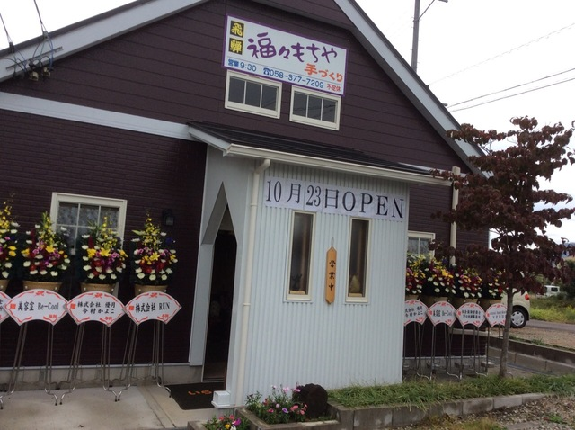
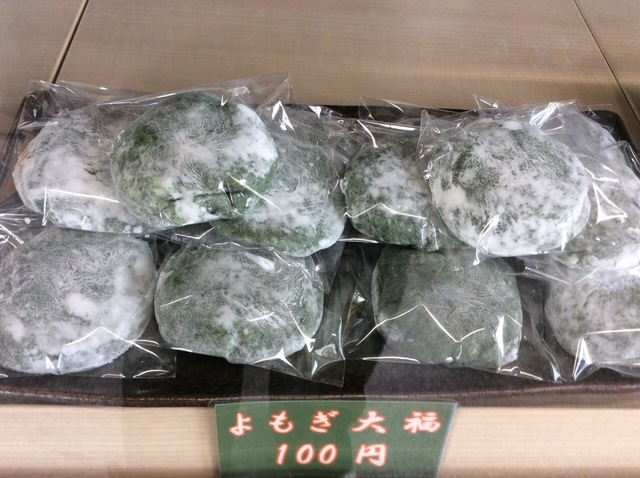
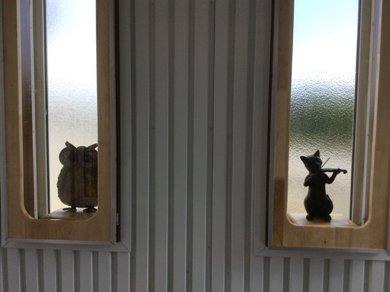
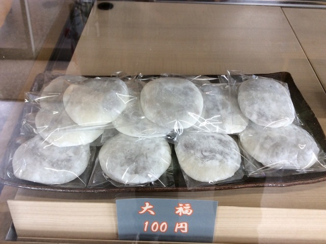

2014年10月に満を持してオープンしました！

おすすめのよもぎ大福です！食べに来てください！

店内は落ち着きのある雰囲気になっています。

大好評の大福です！
お店紹介
営業日・時間
Calendar Loading
- 土・日・祝日も営業しています。
- 営業時間: 9:00~16:00
- 売り切れ次第終了とさせていただきます。
当店のおもちをおいしく召し上がっていただくために
- 当店の「おもち」「おはぎ」などは、保存料、食品添加物を使用しておりませんので、お早めにお召し上がりください。
- また、保存される場合は、冷凍保存をお薦めします。自然解凍にて、美味しくお召し上がりいただけます。
- おもちを焼く場合は、あらかじめオーブンレンジを温めておくと上手に焼きあがります。
- おもちは、粘りが強い食品ですので、喉に詰まらせる恐れがあります。お年寄りやお子様には十分注意して少量ずつお食べください。
新着情報